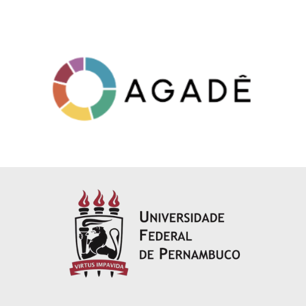
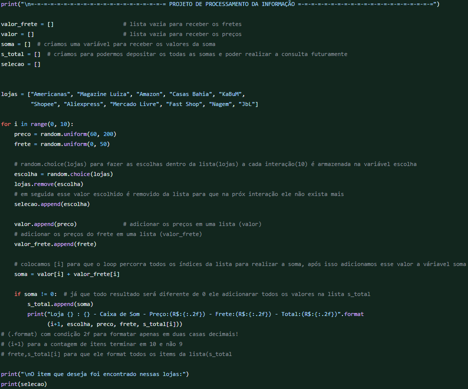
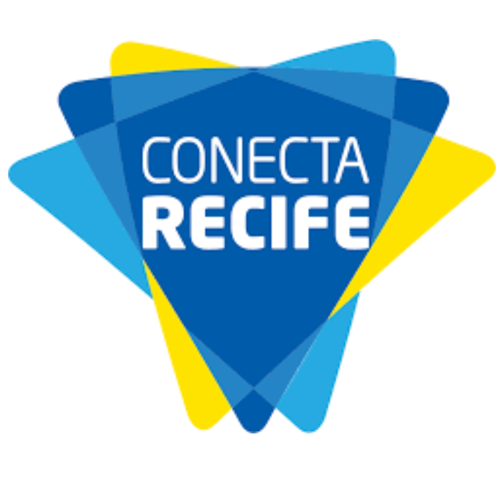
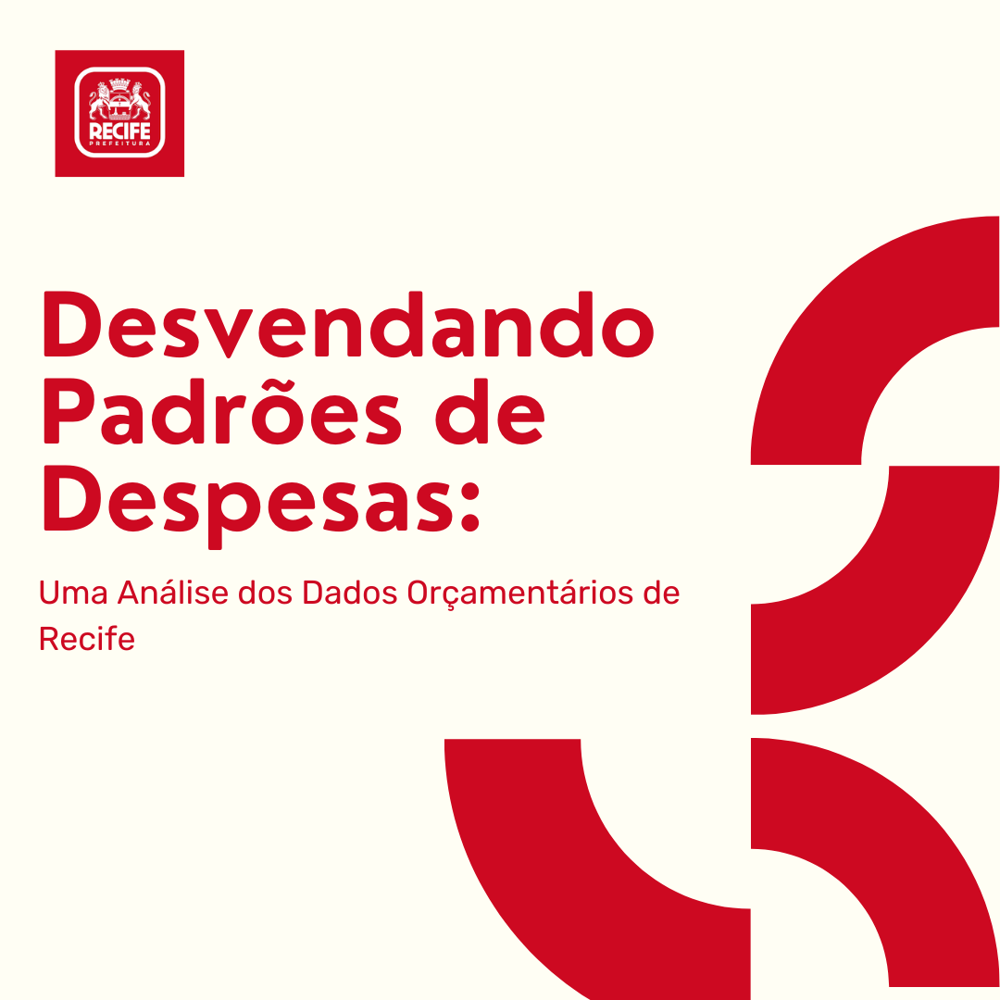

Graduado em Gestão da Informação pela UFPE, atuo com foco em dados, tecnologia e processos. Possuo experiência em SQL, Python, PowerQuery e Mineração de Dados, aplicados à análise de dados e inteligência competitiva. Formação complementar como aspirante a oficial R/2 pelo CPOR do Recife, com base em liderança e gestão logística.
 Desenvolvimento de algoritmo de mineração de dados em linguagem SQL, aplicado à descoberta de padrões em bases de dados. A iniciativa integra os projetos do laboratório de pesquisa da UFPE (Agadê) e está disponível no site oficial.
 Este projeto apresenta um painel desenvolvido no Power BI, com uma visão geral das matrículas escolares na Região Metropolitana do Recife.
Os dados foram obtidos através do Portal de Dados Abertos da Cidade do Recife,
permitindo uma visão detalhada sobre a educação pública municipal.
validação.
Este projeto apresenta um painel desenvolvido no Power BI, com uma visão geral das matrículas escolares na Região Metropolitana do Recife.
Os dados foram obtidos através do Portal de Dados Abertos da Cidade do Recife,
permitindo uma visão detalhada sobre a educação pública municipal.
validação.
 O artigo analisa o comportamento de usuários no X antigo Twitter a partir de tópicos em alta (trending topics) no período de janeiro a abril de 2023, utilizando
revisão bibliográfica e web scraping para coleta e análise dos tweets. O estudo busca identificar padrões de opinião e interação dos usuários em períodos e contextos específicos.
O artigo analisa o comportamento de usuários no X antigo Twitter a partir de tópicos em alta (trending topics) no período de janeiro a abril de 2023, utilizando
revisão bibliográfica e web scraping para coleta e análise dos tweets. O estudo busca identificar padrões de opinião e interação dos usuários em períodos e contextos específicos.
 O projeto foi concebido como parte da disciplina de Processamento da Informação e tem como objetivo simular um sistema comparativo de preços semelhante ao Buscapé. O objetivo é criar um ambiente em python onde diferentes lojas oferecem preços e fretes aleatórios para um produto específico, e ajudar os usuários a tomar decisões informadas ao comprar o produto.
 O programa Conecta Recife oferece Wi-Fi gratuito em toda a cidade, promovendo o acesso à internet. A análise dos dados revela um panorama sobre a distribuição da conectividade na cidade. Com base nesses dados, é possível identificar os locais que concentram mais pontos de internet gratuita, bem como os que podem necessitar de maior atenção. Isso não apenas ajuda a avaliar o sucesso do projeto, mas também permite tomar medidas para melhorar a acessibilidade à internet.
 Este artigo detalha o processo de verificação de padrões na base de dados de despesas da Secretaria de Finanças, disponibilizada pelo Portal de Dados Abertos da Prefeitura de Recife. Utilizando técnicas de consultas e funções SQL, o projeto buscou identificar padrões relevantes, visualizá-los no PowerBI e compreender o seu contexto para validação.